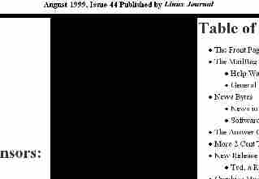
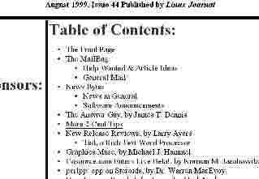

Write the Gazette at gazette@linuxgazette.net
|
Contents: |
Write the Gazette at gazette@linuxgazette.net
|
Contents: |
Answers to these questions should be sent directly to the e-mail address of the inquirer with or without a copy to gazette@linuxgazette.net. Answers that are copied to LG will be printed in the next issue in the Tips column.
Before asking a question, please check the new Linux Gazette FAQ to see if it has been answered there.
 Wed, 04 Aug 1999 06:09:15 +0300
Wed, 04 Aug 1999 06:09:15 +0300
From: Marius Andreiana <Marius_And@usa.net>
Subject: Article idea
Hi this is Marius.
I think a very good article could be made about PostgreSQL. One which wouldn't repeat what's in the HOWTO, but present how to use it on the web, some interfaces to it ( like Java, Php3, Perl, ... ), with advantages/disadvantages, links to good sites for newcomers etc.
I used to developed some Visual FoxPro applications, but I'd like something more powerful ( and free ) for use over TCP/IP. I've read the web section in the HOWTO but I don't have the time to get the tools described there ( must learn for getting admitted in university ).
Thank you, Marius
Thu, 05 Aug 1999 09:25:03 +1000
From: Dave Mason <91001832@snetnzwe.cpg.com.au>
Subject: Which distribution for an advanced user?
i was just curious if you had a mailing list? if you i would be very greatful if you could add me to your mailing list.. as i am interested in learning the problems and solutions of linux and other important information.
Which distrabution of Linux would you recomend for an Advanced Linux user? at the moment i am using Debian 2.0 as my root source and Redhat 5.1 as my server... i've installed and ran FreeBSD 2.8.8 but i find linux more useable...
[See the LG FAQ for the mailing list question.I use Debian because it doesn't get in the way of the advanced user the way some other distros do. Plus I like the "designed by volunteers" aspect, and the fact that I can participate in the development process to whatever extent I want. (I'm not a developer, but I read debian-devel sometimes and worked at the Debian booth at LinuxWorld in March.)
The question is, are you dissatisfied with your current systems? If not, why switch? -Ed.]
Thanks Alot Sifer
Fri, 30 Jul 1999 23:21:57 -0400
From: AP <adpias@golden.net>
Subject: modem
I am a new Linux Red Hat 6.0 user.
I cannot connect to the Internet (still using W98). My 3com-USR 56K voice faxmodem-V90 is not working under Linux. The serial # of my modem is 5685. It's p-n-p Sportster with jumper to set com-port and IRQ manually.
I could not get any help from Red Hat!
I am looking for anybody who can help me to make this modem working with Linux. If it is impossible, which modem should I buy?
Please help, don't leave me with Windows!
Adam
Sun, 01 Aug 1999 04:00:26 -0400
From: Zeb Morgan <n4zm@mindspring.com>
Subject: Digitizing program
I have a ton of documents that I wish to digitize. Is there a program running under Linux that is similar to PaperPort, Pagis Pro, and/or PageKeeper?
Thanks.
Tue, 3 Aug 1999 12:32:35 -0000
From: JUIN Aymeric <Aymeric.JUIN@DGI2000.com>
Subject: linux on a laptop
I'm a linux newbie. I installed linux (redhat 5.2) on a laptop with an ATI rage LT PRO AGP2X, and there's no driver for this graphic card to run Xwindow, I tried to find one on the web, but without success, I also tried other ATI drivers (like ATI rage pro and other MACH64 drivers) without better results. Is there any solution ? Please help me...
PS : sorry for my poor english.
Thu, 05 Aug 1999 07:36:55 +1000
From: Dave Mason <91001832@snetnzwe.cpg.com.au>
Subject: Running Windows Programs In Linux?
Is there any way of Running Windows Applications and Programs from Linux? i've heard of dosemu, but that only supports some of the dos games, if there is such a product, could you tell me the name of it and where to get it from... and is it also multi-platform Unix?,
[This is answered in the FAQ. -Ed.]
Thu, 5 Aug 1999 00:49:33 +0100
From: Advanced one corporation <advanced1@ibm.net>
Subject: I have a question
I hope you don't mind this question, but I am a newbie at Linux Red Hat 5.2
and I am trying to find out what is a mount point and how do I define it
during installation? T
A mount point is an empty directory upon which another disk partition is (or will be) mounted. When mounted, it creates the illusion that the entire partition is inside that directory. This is how UNIX handles multiple partitions, different from the C: D: E: drive letters that Dos/Windows uses.
I use Debian, so I'm not very familiar with Red Hat's installation program. I believe the partitioning dialog (Disk Druid?) has a column where you define the mount point for each partition, and it automatically creates directories as needed.
Later, you'll use mount points to access floppy disks, CD-ROMs, network filesystems, etc, the same way. The "mount" and "umount" commands (or an equivalent GUI dialog) open and close access to these devices, through the mount point directory. -Ed.
Thu, 05 Aug 1999 00:19:16 -0400
From: M.Myszkowski <myszy@home.com>
Subject: Network with Win98
Hi,
I want to put in network my two computers. First one as a server has Win98 and is connected to the internet via cable modem (using different ethernet card).Second one - client has Red Hat Linux 5.2 Deluxe. I am a beginner with Linux and I don't know how to set up network configuration in both computers.
Thanks,
Marek
Wed, 04 Aug 1999 22:09:27 -0400
From: Myk <mykill5@mindspring.com>
Subject: Essential Software...When will we get it?
I have been using Linux from the early days when Slackware and Debian where the kings. I have always had a dislike for Windows 3.1 straight through to Win 98; but the one thing Windows has is some great software from great vendors Like Macromedia. I switch from Windows to Linux just to use programs like Flash, DreamWeaver, QuarkXpress, as well as small programs like Rio GUI, ReBirth, etc. When can we see these programs ported to Linux? Are there any rumors of companies trying to port se to Linux? Is there a competant Emulator available that can run these programs without a problem? I now use Linux as my OS of choice. It dominates my HD and I use nothing else; but I do miss some of the great WYSIWYG HTML Editors and Flash etc...Oh well guess I will have to make do with what I got. The other thing is that I just purchased a laptop and before it is delivered is there anything I should know about installing Linux on my Laptop with minimal casulties? How should I go about installation? What about video, sound, etc...?
Thanx,
Lance Miller
Wed, 4 Aug 1999 21:55:42 -0700 (PDT)
From: BurleyRon@aol.com <BurleyRon@aol.com>
Subject: A Request for Assistance
When I first read of Linux in a catalog, I had hopes that it would be my personal ticket out of Microsoft's sticky hands. I had hoped it would be analogous to a modern DOS or something like that. I would typify myself as an expert in pre-Windows DOS and as passable in post-Windows DOS.
Well, frankly, I hardly understand many of the words. Right away I knew I had made a mistake. This Linux is for computer jocks and developers of the first magnitude.
My question for you is, "Am I right?" Have I stepped through the looking-glass of computer literacy into the wonderland of the developmental dervish? There could be one other explanation -- I jumped into the middle of the story when I should have begun at the beginning. Is there a beginning for the computer literate person -- where terms are defined, examples are given, teachers are patient and I can begin to gradually "wean" myself from Mother Windows?
Fri, 6 Aug 1999 12:13:28 +0100
From: Geoff Hare <geoff@hare21.freeserve.co.uk>
Subject: Setting up LINUX
I am in the process of acquiring a new PII - 450 Machine. I have decided to have 2 x 10Gb hard drives. One of these drives will be partitioned for LINUX programmes and LINUX Data.
Is these anyone in the CROYDON-CATERHAM-CRAWLEY area would be interested enough to help me carry out the installation process?
Geoff Hare (who spotted Linux some time ago and felt that it might come to something!)
Mon, 09 Aug 1999 09:35:19 -0400
From: Rajani K Yellamanchili <Rajani.Yellamanchili@wmich.edu>
Subject: Unix Startup
Dear Administrator:
I am a student at Western Michigan University, and am currently collecting resources for the startup tasks performed by unix/linux. I request you to help me if you can. I state my exact requirement below.
I am looking for all the files invoked/used by the init process at startup, when a work station boots up in a network. I am also looking for the organization of the /etc directory and its probable contents.
Looking forward for your reply, I remain
Regards
Raj
The boot loader starts init, which reads /etc/inittab. See man 8 init, man 5 inittab. Most distributions follow the Linux Filesystem Standard for the sake of interoperability. A newer document is the File Hierarchy Standard; the distributions have not yet implemented this, but are expected to in the near future. http://www.pathname.com/fhs/ The runlevels use configuration files in or near /etc/init.d and /etc/rc.d. The "System V" method is used by Debian and Red Hat. In it, /etc/init.d contains scripts named after a package. Symbolic links in the /etc/rc*.d directories (numbered according to runlevel) specify which services should be started or killed when switching to that runlevel. The "BSD" method is used by older (and current?) Slackware systems: /etc/init.d doesn't exist, and /etc/rc*.d are scripts (one for each runlevel) which handle the starting and stopping of services. -Ed.
Wed, 11 Aug 1999 18:38:04 +0000
From: R. Smith <rsmith13@tampabay.rr.com>
Subject: Why are they trying to telnet in to my Linux box?
Sir,
Recently I noticed that, most every time, my niece used her Win 95 computer (on my lan), I would start getting a lot of telnet attempts to my Linux masq box. Most of them were from dalnet.somthing.or .other. So I sent email to several of them asking why they were trying to telnet to my box. Here's the reply that I got from one:
Jason wrote:
Dear Sir or Madam, The "attack" you have seen is not an attack at all, but a check for an open Wingate or SOCKS server on your computer. Toledo Internet Access is the host of glass.oh.us.dal.net. We have recently implemented a policy of checking users on connect for open Wingate and SOCKS servers to attempt to cut back in the abuse of Dalnet via these often abusive services. We apologize for any inconvience this may have caused you. Jason Slagle Network Administrator Toledo Internet Access Raistlin_Mejere - CSOP - Dalnet IRC Network
It seems that every time a client connects to a irc server, the server tries to telnet into the client's box! This is about the dumbest thing that I have ever heard of! I don't like having my intruder alarm go off at 2 am because my niece wanted to use irc. I don't like anyone trying to telnet in to my box for any reason! No sir, I don't like it at all.
I suppose I will have to turn irc access off for my niece.
--
Rick,
The Linux Gazette Editor wrote:
Hi. This will be printed in the August Linux Gazette at the end of the month. In the meantime... I don't use IRC, SOCKS or WinGate, so I can't say whether they're being reasonable or not.
This is something new that the irc servers, all have started doing in the past few weeks.
Of course, you can always comment out telnetd in inetd, if you don't otherwise need it.
I only allow telnet in from local machines (via hosts.allow). I have everything else turned off in inetd per standard practice. I have host.deny setup to log all incoming attempts and wavplay to sound an alarm. (I haven't had any trouble since getting Road-Runner but I've been port scanned a few times with my previous IP.) I just wrote a new log script that will skip the alarm if the in.telnetd attempt is from a "know" dalnet server. (So I can get some sleep!) It still logs the suckers though!
I'm not sure whether [disablling telnet] would cause the IRC servers to refuse service or not...
I doubt it, they are use to working with win 95. How many 95 boxes are running incoming telnet service? That's what they are trying to find out.
[Have other people had problems with IRC authentication recently? What are the servers doing and why? Why should they care whether Win95 boxen are running telnetd or not? -Ed.
Fri, 13 Aug 1999 04:42:18 +0500
From: Zahid Mannan Butt <zmbutt@hotmail.com>
Subject: Sis6326 Driver
I am new user on Lunix IS There any way to configure my SIS6326 8Mb AGP card for lunix? Even I contect to the vendors but they can't Help me. Please If you Know something about to configure it tell me other then sis.com.tm/driver/driver
Thanks
Zahid Mannan Butt
Fri, 13 Aug 1999 14:19:13 +0530
From: regan <to_regan@hotmail.com>
Subject: Help Help
Hi!
I've installed RedHat 6.0 and have a SiS 6215 display card. During installation, I had to specify the card details as Red Hat was unable to detect it.
Now in Gnome, my display is larger than my monitor screen. I can only see the top 4 icons on the desktop. Also when I open any folder, the size is four times my screen size. Is there any way I can change my resolution or find support for this particular card. I've tried the SiS home site and redhat.com but there's nothing available there. If anyone has any info as to how I could solve this problem, contact me at to_regan@hotmail.com
Thanks
Regan <regan@irpl.com>
India
Fri, 13 Aug 1999 06:08:47 -0700
From: Bobby Prater <bprater4@bellsouth.net>
Subject: Problems with the speed my computer connects and scrolls while connected to my phone line.
Is it possible the phone line we had installed solely for internet use could slow my computer down? I have 400mhz and 128 meg ram, We decided since all other ideas failed we would try what a friend suggested and just bring my hard drive to their home and see if we had the same problem, Amazingly it performed as it should I was so happy thinking when I came home it would do for me as well as when on his phone line; IT DID NOT!!!! it's as poky as ever. I have tried connecting to ebay.com to view and bid on some items for over three hours and after we connect an error message pops up as I'm waiting for their reply, I have never had this problem. I'm ready to quit because it is impossible for me to find spare time in the bulk presently required to use the net. I am completely out of solutions to try so please if you have any ideas or suggestions email me
please! Any help will be greatly appreciated.
Thank You,
Mrs. B. Prater
Fri, 13 Aug 1999 16:16:38 +0000
From: R. Smith <rsmith13@tampabay.rr.com>
Subject: Re: Why are they trying to telnet in to my Linux box?
Linux Gazette wrote:
Sat, 14 Aug 1999 06:04:01 PDT
From: Zahid Mannan butt <zmbutt@hotmail.com>
Subject:
I read your message Kindly I thanks you to response me but I try to configure the driver from www.suse.com (both) but I am fail Tell some other than www.suse.com this one I am really thanks you again Zahid Butt
______________________________________________________ Get Your Private, Free Email at http://www.hotmail.com
Sun, 15 Aug 1999 18:16:03 PDT
From: Joe Bubba <gundog1@hotmail.com>
Subject: RedHat 6.0
To whom it may concern,
I am trying to download RedHat 6.0 from a mirror site but WSFTP.exe errors out. It errors out in the \misc directory. The files that cause the errors look like part binary or part folder icons (a file that contains a directory structure). I am using WSFTP32.exe on a Win95/NT machine and my goal is to copy the files to a hard drive and burn them to a CDROM later.
The only information I could find was to create a mirror, then copy the files to a CDROM.
Any help would be greatly appreciated,
Rob
gundog1@hotmail.com
Mon, 16 Aug 1999 09:00:42 -0700
From: Douglas Nichols <dnichols@fhcrc.org>
Subject: Concerning the Toshiba 8000
I have installed Red hat 6.0 distribution of Linux on my Toshiba 8000. I have not been able to boot into any runlevel except 5, otherwise linux doesn't seem to respond to the keyboard- I believe this has something to do with the mouse. Everything else is working fine with apm I am using gnome. The pcmcia card was a problem, but I finely upgraded to 3.0.14 and everything seems to work well now. Periodically some process doesn't allow to umount the disk( I think it's gnome) and when I reboot, I have to fsck. If I can provide you with a ccopy of any of my config files just e-mail me.
--
Cheers, dn
Mon, 16 Aug 1999 20:08:34 -0400
From: Mulualem Takele <m.takele@worldnet.att.net>
Subject: MS WinModem Linux
Before a month I purchased a Dell Dimension XPS T450 Pentium (r) III PC with US Robotics 56K Voice Win (soft ware driven) Modem. Unfortunately, I realized now that the modem I ordered is not supported by Redhat/Linux 6. Now, I am wondering if there is anything I have to do so that I can run Netscape Navigator on Linux. If not, what possibilities do I have?
[Get another modem. Until the winmodem manufacturers release Linux drivers, or provide enough technical info so we can write our own drivers, that's your only choice.In any case, a winmodem is not a complete modem. Several hardware parts are missing, which are emulated by the Windows driver. But why waste CPU time and memory doing something the modem should be doing? Look for a modem that says it will work with UNIX, DOS or Macintosh as well as Windows. If it can work with anything besides Windows, it should be OK. The US Robotics Sportster series is good, as are other brands. (PS. US Robotics is owned by 3Com. So if you see a 3Com modem, it's the same as a US Robotics modem.) -Ed.
Tue, 17 Aug 1999 01:55:51 EDT
From: <HUEBRIGHT@aol.com>
Subject: 466 dell
When I try to mount my CD ROM and floppy through my system it says it is unable. I am running my CD ROM through a sound blaster 16 help
Jim
Tue, 17 Aug 1999 19:12:49 +0900
From: hansy <sysop@ultari.co.kr>
Subject: Can you tell me the way to adduser by cgi-script?
hi. This is seyong from Korea.
I have so many users above 60,000, and now i have to make them the shell id.
can you tell me the way to adduser by cgi-script? i will be waiting and waiting for your reply.
if you can't, i'm so thank you.
my website is http://www.ultari.com (now under construction because of the +cgi-script). and now i'm using the redhat linux 6.0. thank you. The Linux Gazette Editor wrote:
Hi, Seyong. This will be published in the September Linux Gazette on August 31.Just to make sure I understand your question: You want a form and a CGI script that runs the "adduser" command?
I do not know of any. There are Linux products which allow central administration of a network, and some of them have web interfaces, but I do not know the names of the products.
You can of course write a CGI script yourself which runs adduser, or hire a programmer to do this. But allowing a CGI script to run as root (which it would have to, to have permission to run adduser) is a potential security nightmare. Be sure the program analyses its input very carefully before passing it on to "adduser".
hi, this is seyong han. i'm so thanks for your replying. i want to adduser by web interface. the program will run as root mode. i made an java application to run the cgi. it will run as root mode. so i want the cgi program it get id and password and then add user to +/etc/passwd.
[Is there any existing code to do this? -Ed.
Wed, 18 Aug 1999 18:10:55 +1000
From: Cooma School of Music <csm@cooma.snowy.net.au>
Subject: Downloading Redhat 6
Hi there. Sorry about the From, but I can't seem to change it. I really want to have Redhat linux, but it's been hell trying to find a document how how to download it. I assume these are in packages or images or something. Could you possibly publish a guide on how to download it, or could you tell me the location of a how-to.
-- SK
Thu, 19 Aug 1999 09:24:20 +0200
From: Carlo Vinante <vinante@igi.pd.cnr.it>
Subject: upgrade problem
Hi ti everybody.
I would ask some help on a problem recently occourred to me during an upgrade of my system. I ran SuSe 5.3 very smoothly until I decide to upgrade it to rev. 6, with kernel 2.2.1. then I have encountered two problems : 1) I'm not anymore able to print, except using the copy command to the printer. The aps filter is configured for my printer (a HP Dj 550c); the lpr command doesn't "exist". 2) no sound .....
Does anybody know a good "rule of thumb" to avoid these kind of problems when performing an upgrade ?
Thanks to everybody
Greetings Carlo
Sat, 21 Aug 1999 02:07:53 -0500
From: Lawrence A. Bombac II <Lawrence_A_Bombac_II@lor.net>
Subject: hey
would you be able to direct me to a place that will give me the source code for linux,or could you send it to me yourself,preferably a version that is not copyrighted,if that makes any sense
[Do you mean the Linux kernel or an entire distribution?The source code to the Linux kernel is available at FTP sites all over the world. A list of major sites is at www.kernel.org/mirrors. See also the www.kernel.org home page. This is the core of the Linux system, or what differentiates Linux from all other operating systems. I cannot email it because it is 14 MB big.
However, you need more than just the kernel to have a useful computer system. You also need hundreds of third-party programs and utilities. The easiest way to get a hold of the source code to all these programs at once is to buy or download a Linux distribution. Be sure the product says it "includes source". Before downloading an entire distribution of several hundred megabytes, remember that it's often cheaper and more convenient to simply buy a CD instead.
The Linux kernel and the vast majority of programs included in any Linux distribution are copyright according to the GNU Public License (GPL) www.gnu.org/copyleft/gpl.html or to a similar license which allows the copying and distribution of both the source code and compiled programs without asking anybody's permission or paying royalties. In fact, the GPL in particular *requires* that any company that sells a GPL'd program (and the Linux kernel is GPL'd) *must* make the source code available. -Ed.
Sun, 22 Aug 1999 03:28:18 +0200
From: Philippe COVAL <philc@writeme.com>
Subject: Question: HD brute format
Question: HD brute format
How to format a disfunctional HD ? (hum, i know the "buy a new one" solution)
how to low level format it ? partitioning can't be aplied using fdisk ?
whazup?
Sun, 22 Aug 1999 21:33:30 -0400
From: Robert Rocconella <roko@worldnet.att.net>
Subject: module not found
I have installed Mandrake 6.0 on a P166 system. It runs fine except for. I have a 4mm DAT Archive PYTHON drive, booting off a SCSI 1Gig drive. On bootup when the system looks at my Buslogic controller and identifies devices, it shows the tape drive as st0. The unit was in the system when I installed it. BUT during the bootup it will report module not found when it gets to the part where I assume it is trying to initialize the driver used to access the st0 device. I have been looking thru various sources of documentation but cannot find a reference to the module not found problem or where to install it from. Thanx in advance.
Mon, 23 Aug 1999 11:38:21 -0000
From: JUIN Aymeric <Aymeric.JUIN@DGI2000.com>
Subject: RE: linux on a laptop
I'm a linux newbie.
I installed linux (redhat 5.2) on a laptop with an ATI rage LT PRO
AGP2X, and there's no driver for this graphic card to run Xwindow, I
tried to find one on the web, but without success, I also tried other
ATI drivers (like ATI rage pro and other MACH64 drivers) without
better results. Is there any solution ? Please help me...
PS : sorry for my poor english.
The Linux Gazette Editor replied:
Can you use the standard SVGA driver?
Aymeric responded:
No, it works so bad. it seems to interlace about 5 vertical stripes on the screen. I think several linux-users have this problem, because ATI rage LT pro is a widely used graphic card on notebook.
Mon, 23 Aug 1999 22:57:18 -0400
From: wible <wible@uplink.net>
Subject: installing linux on laptop.
i'm trying to fegure out haw to install linux on my laptop.but i can only have a floppy or a cd-rom.they use the same slot.so how do you istall a cd without a boot floppy? I'm comleattly new to this OS.please advise.
Tue, 24 Aug 1999 22:52:01 +0200
From: Hans Borg <Hans.Borg@Physics.umu.se>
Subject: Color depth 8/16 and Xlib
Hi everybody,
I am not sure this is the right forum, but if anyone can give me some hints to solve the problem or give an alternative FAQ-site it would be utmost appreciated.
I have written a number of Xwindow applications for special purposes. They do all run without any problems if the Xserver is configured for a color depth of 8. Actually those applications do not need many color- map entries (less than 10). However, for other applications like xv and netscape a color depth of 16 is preferred. There are no problem to run eg. xv and netscape with a depth of 16 (I guess they set up their own colormap). But if in depth 16 then my own applications can't set up its color entries. The idea is to be able to run simultaneously both my own applications and applications like xv,netscape with a reasonable color resolution.
To set up my colors I basically do:
screen=3DDefaultScreen(display); colormap=3DDefaultColormap(display,screen); XLookupColor(diplay,colormap,"color",exact_color,screen_color);or alternativelyXAllocNamedColor(.....);
When in depth 16 both XLookupColor and XAllocNamedColor both raises the Xerror: BadValue (parameter out of range) ... something like this. I don't know which parameter causing it and apart from display it must be colormap or "color". It is hardly "color" and if so it must be the colormap. I have checked the "visual" on colormap and it seems OK. I have also tried XCreateColormap(...) and other "give it a chance" methods but I am stuck.
So, please, anyone having an idea, let me know.
With my best regards.
Hans.
Tue, 24 Aug 1999 18:57:47 -0500
From: Amy Bellows <enigma99@earthlink.net>
Subject: ls color
Hi, I have a small yet annoying problem. I'm running RedHat Linux 5.2, and I'm still fairly new to the whole OS.
I can't get ls to display defined extensions in my chosen colors, although it does color directories, executables, etc.. I have tried changing definitions in /etc/DIR_COLORS, and get nothing. Is there something I'm missing?
Fri, 2 Jul 1999 00:18:00 -0400
From: Coleman, James (GEP) <james.coleman@gepex.ge.com>
Subject: color ls headache
OK. I've used Linux for just over a year but have a problem with one of three Linux PCs in our household. On one, a 486DX 50, I get color ls on every user ID except one. I've configured /etc/bashrc as usual (alias ls = "ls --color") and as I've done on each of the other Linux boxes. An ls command produced a colored display with every user except one! I've tried adding an ls alias to that user's own .bashrc file but nothing helps. If I type "ls --color" as that user, I get color! Without it, black and white. What might be going on and what should I look for?
The problem PC is running RedHat 5.2 with all the errata upgrades. Stock kernel, though... The other PCs are all running version 6 (stock kernels).
Thanks!!!
Wed, 25 Aug 1999 20:21:07 +0100
From: helen <helen@dougal1.freeserve.co.uk>
Subject: Suse Linux 6.1
Hi All, I am a new user (possibly) who is having problems setting up xf86config. I have an old IBM PS1/50 which has an xga-2 video card in it, (2 megs mem on card). After trying a lot of the video card database entries, it still refuses to work. All other parameters in xf86config are correct. Has anyone any idea which driver is compatible for the ibm xga-2 video card?
The problem starts when I type STARTX. In most cases I get a screen which is nor resolvable, or, I get the following message:
The file XF86_xxxx (binary of X-Server) does'nt appear to be a binary file. Please check it or / and install a new X-Server binary.
Regards to All.
Geoff <Geoff_G0GLW@yahoo.com>
Geoff_G0GLW@yahoo.com
Mon, 30 Aug 1999 20:58:36 -0300
From: Carlos Massolo <litos@ciudad.com.ar>
Subject: Problems with Diamond SpeedStar A50
I am new to linux and learning fast. I just got one problem when I use startx or kde my screen just shows Black and gray stripes. I have a Diamond SpeedStar A50 AGP card and a Samsung SyncMaster 3Monitor. I tried the Options nolinear, noaccel and swcursor and none worked. Any help would be great.
Litos
Wed, 25 Aug 1999 12:48:22 -0400
From: wible <wible@uplink.net>
Subject: Re: installing linux on laptop.
i'm trying to fegure out haw to install linux on my laptop.but i can only have a floppy or a cd-rom.they use the same slot.so how do you istall a cd wethout a boot floppy?i'm comleattly new to this o/s.please advise.
The Editor wrote to Wible, and Wible responded, adding:
it sez cdrom includes caldera open linux 1.3 and staroffice 4.0... and no my laptop doe's not boot to cd. is there a way to start the install from dos using a command line or somthing? and can you install over a network card in pcmica by booting to the floppy?
[You can install it over the network if you have another computer that can act as an FTP server. Or as a NFS server, if your installation program supports installing via NFS.As far as having a DOS/Windows command that installs Linux (LINUX.EXE?), people have talked about this theoretically, but I don't think it's ever been tried. -Ed.
Thu, 26 Aug 1999 10:41:58 -0400
From: Mark Jenkins <jenkinsm@mint.net>
Subject: USR 33.6 Modem Help
I am running redhat 6.0, I have tried to my modem going in minicom (say already online) I have tied in the KDE PPP dialer (get modem busy error) I have tried setting and the jumpers for coms 2,3,4 with coresponding IRQs. Each time I do set the modem com port in the control panel. Any help would be great, I assume it may be a string command, I just can't seem to find anything on it.
Thanks Mark
Thu, 26 Aug 1999 17:58:38 IST
From: Bala Krishna H.V. <balak@pushpak.india.hp.com>
Subject: Telnet would not work
I installed Linux on my PC successfully.But when I try telnet or ftp to log on to the PC I get the error "login incorrect". I tried changeing the password and even removing it.But no use. Finally I changed the default shell to sh.Still I can't log on. Could you help?
--
With Regards,
Bala Krishna
Thu, 01 Jul 1999 07:40:36 +0200
From: Christopher Richardson <rdn@tara.n.uunet.de>
Subject: Help Wanted - How to best install glibc onto an existing system
I have the SuSe 5.1 distribution on my machine which works fine - as I do not want to fix a running system I need some advice on how to best install the glibc package on my machine. Newer software is linked usually written to be linked to this package. My computer is busy compiling the glibc package, but I am going to wait until I hear from someone before I install.
Thanks Chris Richardson
Fri, Jul 02, 1999 at 12:15:06AM -0400
From: robert Nuzum <rnuzum@earthlink.net>
Subject: Unzipping commands
I would like some info on good sources about how to run commands, especially when unziping files. I'm trying to get some sound on Netscape but can't seem to get the downloaded x-audio file to be recognized in order to unzip it. I'll probably stumble upon the solution after playing around with it, but shortcuts would be appreciated.
I have SuSE Linux 6.1 installed.
Bob
[There is an unzip command which will unzip *.zip files. If Netscape won't unzip it on the fly, you may have to save it to a file and unzip it yourself.There are several books now which give an overview of Linux commands. Try your local bookstore. -Ed.]
Wed, 4 Aug 1999 23:46:00 -0700
From: Mark Wagnon <mwagnon1@home.com>
Subject: Article Idea: Setting up Procmail
Hi,
I found the article "Setting Up Mail for a Home Network Using Exim" (July 99) extremely helpful on setting up mail services for my home network. How about a follow up on using procmail to filter mail into separate folders?
Sun, 29 Aug 1999 22:09:56 -0400
From: Steve Allen <steveallen@earthlink.net>
Subject: Publishing Dynamic IP address on startup
I have my Linux machine hooked to an X-10 teleresponder so I can dial-up and turn the Linux box remotely, and I have it set to dial my ISP as soon as it boots. I want to publish the dynamic IP address given by my ISP to my home page as soon as I connect. I've been successful getting the dynamic IP address by referring to the variable $4 in the script "/etc/ppp/ip-up" that's called by pppd. The problem is FTP'ing it to my homepage. When I try FTP'ing with a script containing the following line from the command line as root, it works fine (I have my logon/passwd and init macro defined in .netrc in my Linux home directory for root).
ftp ftp.homepagesite.com
However, when I insert the above line in my "/etc/ppp/ip-up" script, nothing seems to happen as my homepage is not updated with the new IP address. Any suggestions on how to easily publish my dynamic IP address as soon as I log on? Thanks.
From: peter <peter@anet.lv>
Subject: IDE Zip drive
Hello! I have some problem! How I can Install ZIP-Drive ATAPI verssion?
Tue, 10 Aug 1999 22:25:57 EDT
From:Symeon Vafiadi <>
Subject: AOL and minicom
How do I dial from Linux using minicom having an AOL account? Everytime I dial in it asks me for my login and when I put in my login name it says incorrect login.
Opera is a commercial web browser for Windows. A 30-day evaluation
version is available at
www.operasoftware.com. The Linux port is 25% complete; ports to
other platforms are also in progress. -Ed.]
Hello,
I am posting this message to thank Linux Gazette for publishing my
article last December and all the readers who have responded positively
and helped in developing our website
www.freeos.com
The site is finally up and running and is being updated regularly. Any
more people willing to help can e-mail me.
Regards,
Hi Mark,
I've got a quaestion about your ramdisk article.
AFAIK Linux uses all the memory that is not in use by programs as a
unified buffer-cache. So I'd guess that all frequently used files will
probably be cached in RAM, assuming you've got enough RAM.
So why go to all the trouble of using ramdisks? Is there really an
substantial speed increase?
Regards,
It's quite possible that this is a surveying term, for accurately-located
reference markers embedded into the ground; these are used as working
references when doing a survey. I'm just about sure you'll see bronze
domes (almost flat), maybe 4" in diameter, surrounded by concrete, with
their exact latitude and longitude (and altitude?) marked on them.
Tampering with them is a criminal offense, I believe.
Sorry not to offer much help in how the term came to mean what it does to
the computer community; perhaps the idea of comparing to a reference
explains it.
Any surveyors "out there"?
Regards to all.
My opinion you have to much stuff on the net . U got in the way of my
search. Out of 391 u had at least 350 . Hope your paper goes under with
highest malice.
I just wanted to drop a quick note of thanks for the article: "DNS for the
Home Network" in the August 1999 (Issue 44) issue of the Linux Gazette. I
had tried on several occasions to setup bind on my home Linux server only to
become frustrated and give up after hours of work. Well thanks to your
succinct and accurate article my home DNS server is working great now for a
few hours!
Mark Moran
Fri, 27 Aug 1999 20:04:32 +0200
From: Bjorn Eriksson <mdeans@algonet.se>
Subject: SV: Ooops, your page(s) formats less-optimum
[Bjorn wrote in to say that recent issues of the Gazette
(starting with #39, April 1999) do not format properly under Opera.
Is anybody else experiencing this? Any clues about how to make Opera
happy? Here are sample screenshots of the middle of the screen:
Opera

Internet Explorer

Sun, 08 Aug 1999 17:43:37 +0530
From: Prakash Advani <prakash@freeos.com>
Subject: FreeOS.com
Prakash
Fri, 13 Aug 1999 02:14:21 +0200 (CEST)
From: Roland Smith <rsmith@xs4all.nl>
Subject: Re: Ramdisk for Linux
Roland
Thu, 19 Aug 1999 00:49:03 -0400 (EDT)
From: Nicholas Bodley <nbodley@shell2.tiac.net>
Subject: Original definition of bench mark
Sat, 28 Aug 1999 19:01:31 -0500
From: DENNIS L PHIFER <den1317@intellisys.net>
Subject: inconsiderate
Sun, 29 Aug 1999 11:40:20 -0400
From: Mark Moran <mmoran@mmoran.com>
Subject: DNS for home network
This page written and maintained by the Editor of Linux Gazette,
gazette@linuxgazette.net
Copyright © 1999, Specialized Systems Consultants, Inc.
Published in Issue 45 of Linux Gazette, September 1999
![[ TABLE OF CONTENTS ]](../gx/indexnew.gif)
![[ FRONT PAGE ]](../gx/homenew.gif)


 The Mailbag!
The Mailbag!